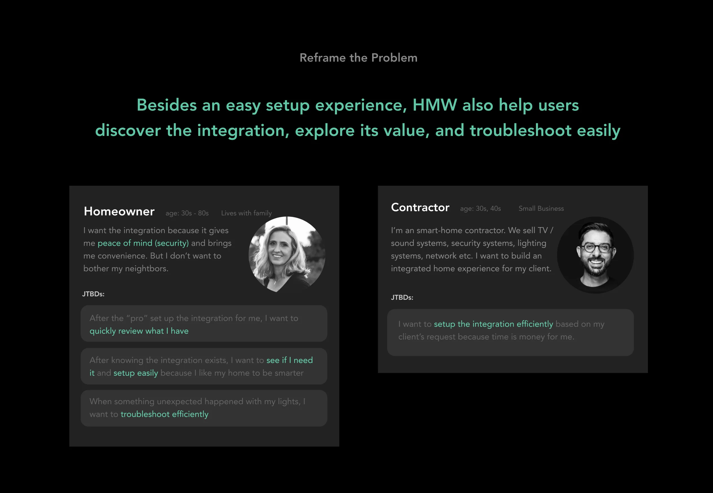
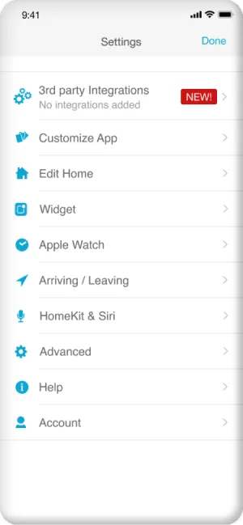

As the UX lead of this feature, I led interaction design, user research, and worked closely with a visual
designer, a PM, multiple developers, as well as data scientists.
00
Summary
Background
Lutron sells smart lighting systems, which includes lighting controls, sensors,
shades, and lighting fixtures.
Ring sells home security systems, which includes video doorbells, security cameras,
sensors, and other devices.
It had been a long-requested feature to let Ring security system affect Lutron lights.
Many Lutron dealers also sell Ring products, and we’ve received many requests for the
integration. In 2020, business teams from Lutron and Ring agreed to support it starting with
Ring’s security cameras and camera doorbells. More specifically, a signal is sent to Lutron products
when someone rings the doorbell or motion is detected.
Ring has doorbells and cameras that detects motion
Our Mission
HMW help people set up and use their integration of Lutron and Ring easily?
So, how did we get there?
01
Research
With a tight schedule, we started to design with existing knowledge and assumptions, and conducted generative and evaluative research at the same time.
In order to launch by Amazon Primce day, we only have 8 weeks to complete the design. So we started to develop concepts even before generative research, then tested the design and learned about user motivation, value propositions at the same time.
Prior to User Interview
Prior to the user interview, we did some secondary research, defined hypothetical personae, user journeys, and
started to develop concepts for setting up the integration.
1. Build empathy by using Ring products ourselves
2. "Competitive" research
3. Hypothetical persona
4. Develop setup concepts
1. Build empathy by using Ring products
We used the Ring doorbells and cameras ourselves to build empathy. A key insight gained from this activity
is that, motion detection can get overly sensitive under certain conditions such as windy weather.
2. "Competitive" research
We found that people are already integrating Lutron and Ring products through 3rd-party platforms like
IFTTT. The most popular automation is to activate a Lutron scene with a Ring doorbell.
3. Hypothetical persona and user journey
We gathered persona information from existing research. Then we developed a user journey based on
assumptions, which we listed down along with other questions and unknowns as points to validate during user
research.
4. Develop setup concepts
Guided by the lean approach, we developed 2 concepts for the setup experience. For each concept, we created
designs of different fidelity (task analysis, information architecture design, and wireframing), so we can
better validate our assumptions with real users. We chose the setup process not only because it’s the most
fundamental function, but also because the Lutron App has many existing setup flows for us to reference.
...
Then we conducted 6 online user interviews
Generative learnings
1. Users want to know what an integration does before adding it
This is a pain point of Lutron’s existing integrations.
Users can’t easily figure out what an integration can do until after they added it. Users want that
information upfront because it helps them decide whether to add the integration or not.
2. Users are in an “exploration mindset” when they are setting it up
Users don’t decide everything upfront or have a clear goal in mind while setting up.
Instead, it’s a continuous process. Users explore what the feature provides and decide what to set up as
they explore, and this is because smart lighting and security are a new concepts to most people.
This means our design needs to explain the capabilities and inspire
users during the setup process.
3. Security is the fundamental value proposition and social aspect is a key factor
We learned about the value propositions through showing different use cases.
Some of our brainstormed ideas were undesired by users because
they negatively affect the sense of security, even though they reduce annoyance.
On the other hand, ideas that may annoy neighbors or visitors are also not welcomed
even if they enhance security.
Based on the insights, we reframed the problem statment

02
Design Process
High-level solution
Decide on basic ideas based on user feedback
After another round of ideation, we prioritized the ideas with stakeholders based on user value and task size, and developed a phased implementation plan.
Example Decision: Select lights instead of scenes
Even though IFTTT stats show that people usually activate scenes instead of individual
lights, our user interviews actually suggest the opposite. Users prefer to select lights because
otherwise it’d take them more work to create a scene first.
Our assumption is that it’s harder to select and maintain multiple lights from a 3rd-party platform like
IFTTT.
Concept and Task Flows
Decide on one "setup" concept based on user feedback
We developed and tested two concepts with users, one is creating an event, the other is configure for each Ring device. We decided on the "Device-based" concept based on user testing feedback and a data insight. Overall its strength better aligns with the design goal -- make the experience easy to understand as user setup the integration.
Task Flow
We developed two concepts with different flows and tested both with users.
Information Architecture
Keep simplifying the experience
User's feedback on the initial version we tested was that the device screen is a little overwhelming, and some specific settings are hard to understand. So we explored different ways to simplify the experience, and made 4 simplifications in the end
Remove the two “same as” options because it’s not a common need for smaller-scale systems.
Hide the "enabled" setting when there's not light selected to apply the progressive disclosure principle.
Reduce “effective time” options from 3 to 2 and move it into the “select lights” page. This is because we learned people hardly need the “daytime” option, and the settings is more useful when user is selecting lights.
When user have multiple homes, instead of asking user to select what lights are in the current home, we decided to use a “show all/programmed” toggle. This way it's a simpler experience for both single-home users and also multi-home users.
03
Final Design
1. Before Setup
User discovers the integration through notification (when both Ring App and Lutron App are installed), or through the "new" tag in the Lutron App. Then user can get an idea of what the integration does and explore its value through use cases.

2. Setup
User can setup an automation in 3 simple steps: 1) Select a device, 2) Select a trigger, 3) Select lights to turn on. After the setup, user can also hide devices that don't control any lights. This does not only give user a clean overview, but also help user filter out devices at another home
3. After Setup / Troubleshoot
Identify whether the integration was triggered.
Resolve issues by adjusting sensitivity on Ring App or disabling for a short time.
04
Shipping
Localization and accessibility specs
In prep for shipping, we co-ordinated with translators for localization work, the visual
designers did color contrast check and created large-font specs. I
pioneered the “voice-over” specification process in the company working with our accessibility
champion.
Data tracking and measurement
I also pioneered a 6-step data tracking process at Lutron UX, which was also adopted and
built on in future projects. See key data results:
Interested in more details? Reach out and let’s chat!